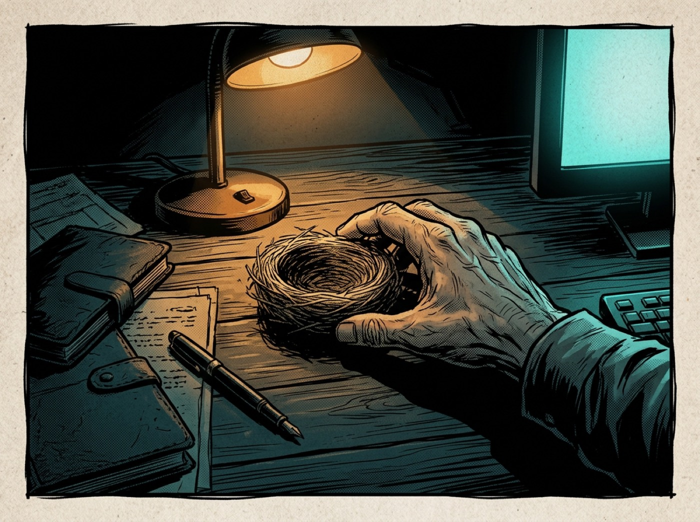
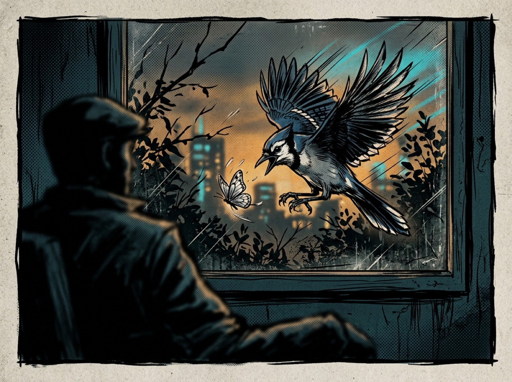
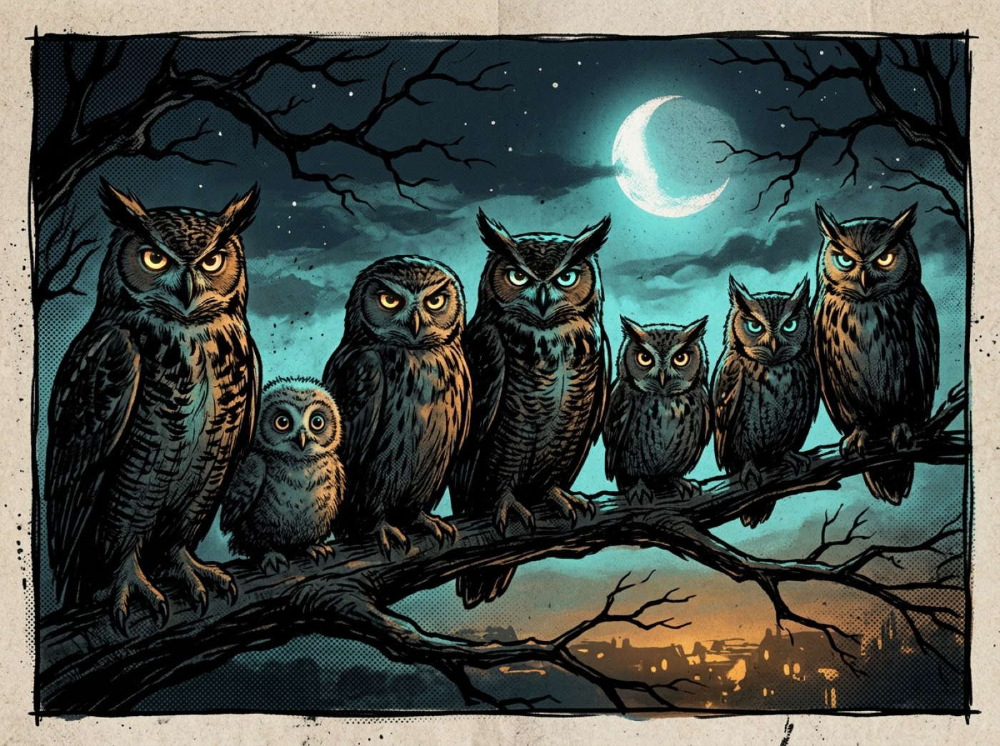
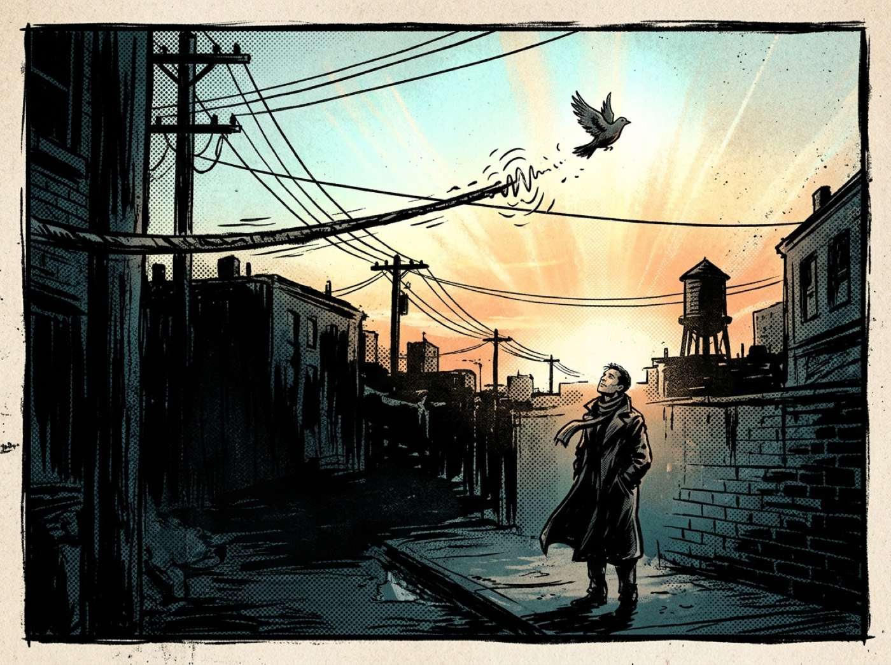

Panel 01 — The Nest

It started as a gift. Something small. Something you're supposed to protect.
A big story, cut to four panels. The arc of cutting one tether so the signal
comes through clean.
Not fiction. Documentation.




PFLASH it. The P is silent. The truth isn't.
Story 01 of the living comic. Four panels now — the arc expands from here.